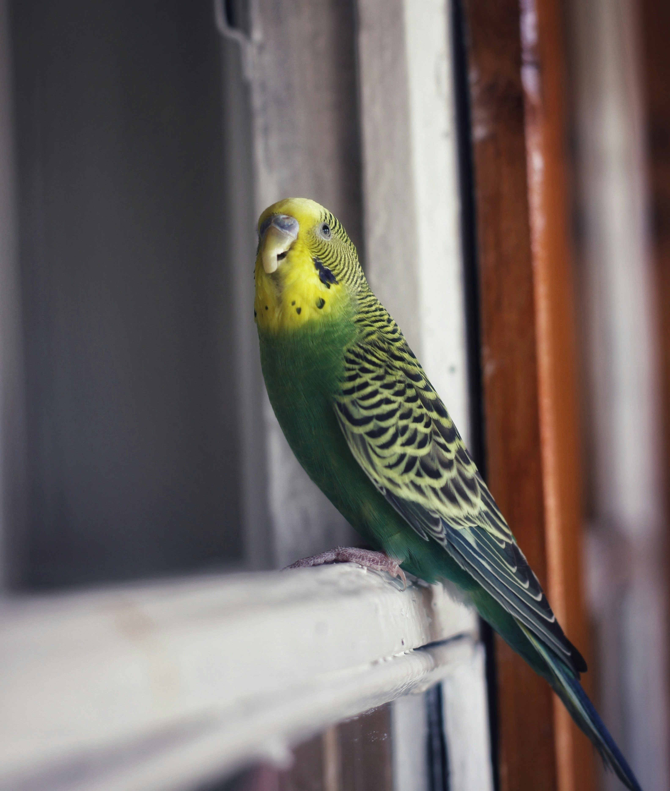

The grey parrot is medium-sized, predominantly grey and black-billed. Its typical weight is 400g (14oz),
with an approximate length of 33cm (13in), and a wingspan of 46–52cm (18–20+1/2in).
The head and wings are generally darker than the body.
Head and body feathers have slight white edges; the tail feathers are red.
Due to selection by breeders, some grey parrots are partly or completely red. Both sexes appear similar.
Juvenile colouration is similar to that of adults, but typically their eyes are dark grey to black,
compared to adults' yellow irises around dark pupils, and their undertail coverts are tinged with grey.
Adults weigh 418–526g (14+3/4–18+1/2oz).
Grey parrots may live for 40–60 years in captivity,
although their mean lifespan in the wild appears to be shorter — approximately 23 years.
They start breeding at an age of 3–5 years and lay 3-5 eggs per brood.
Grey parrots are mainly frugivorous, with most of their diet consisting of fruit,
nuts, and seeds, including oil palm fruit. They sometimes also eat flowers and tree bark,
as well as insects and snails. In the wild, the grey parrot is partly a ground feeder.
 |
 |
 |
 |
|
| Budgerigar | Cockatiel | Cockatoo | Macaw | Indian Ringneck |
|---|---|---|---|---|
|  |

|

|

|

|